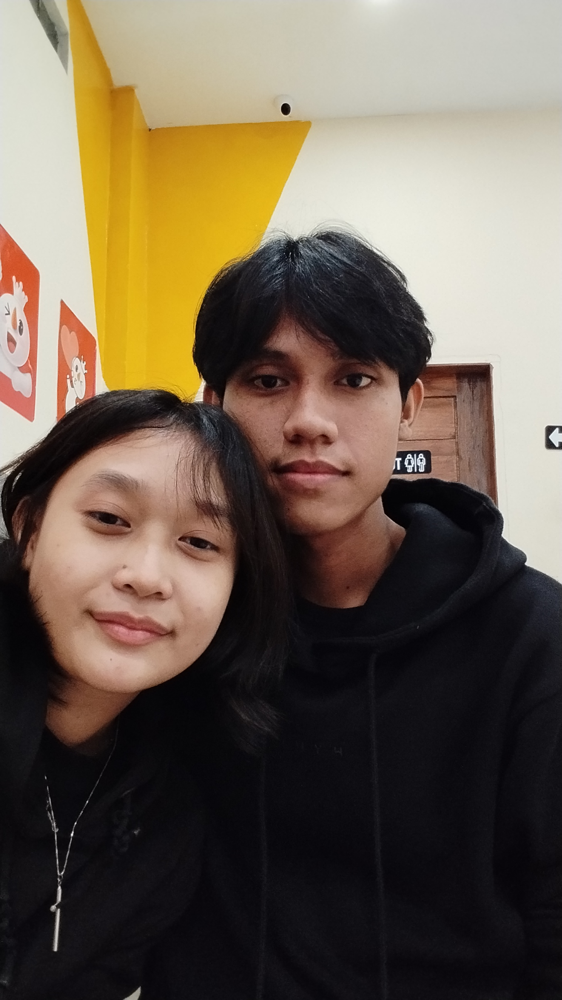
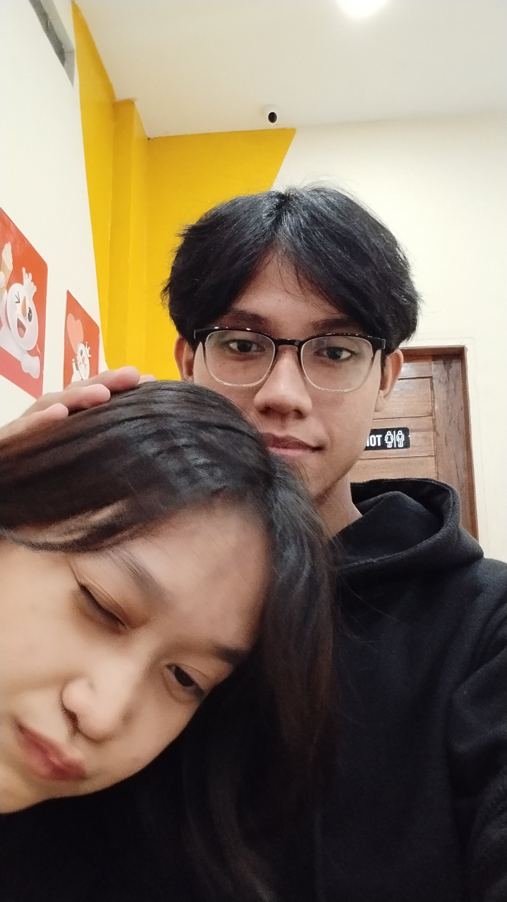
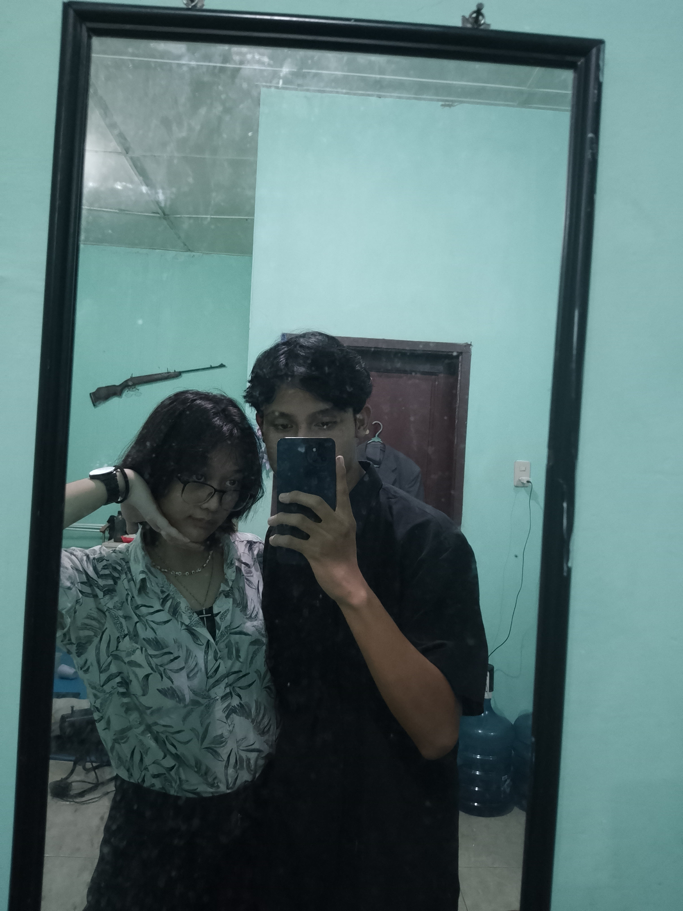
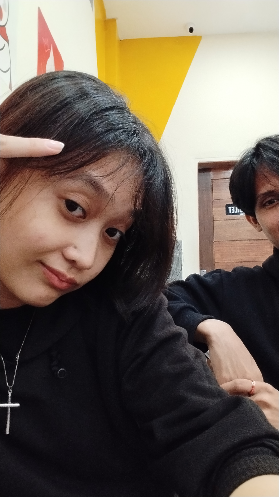
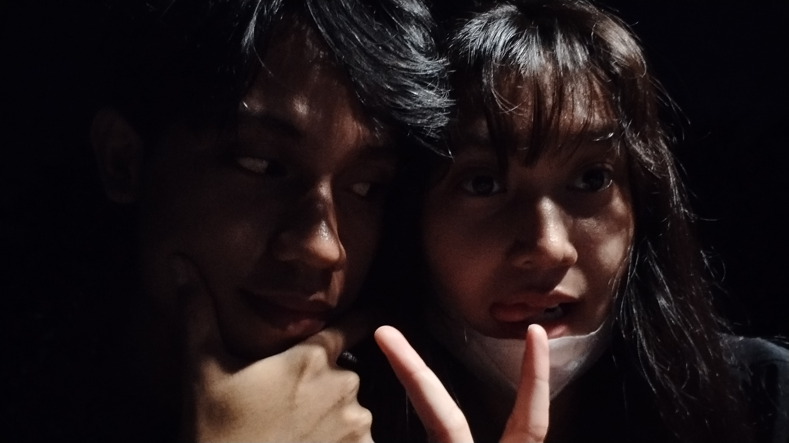
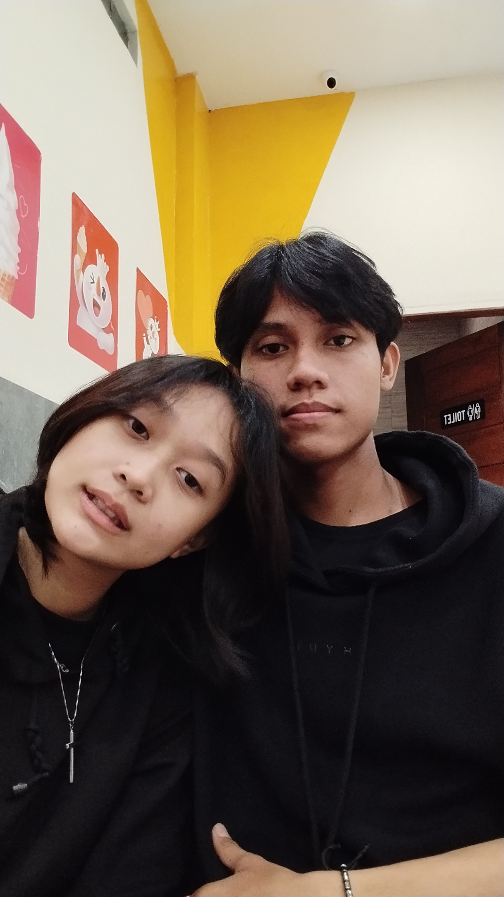

Ada pesan buat ayang

Disinii, saat inii simonn ingin membuktikan bahwaa
Simonnn bener bener kangen sama ayang ❤
Kangen pegangan tangan sama ayang, kangen elus elus kepala ayang, kangen buat pelukk ayangg
Simon kangen ay samamu, tpi dia harus menahan perasaan ini sampai dia bertemu sama ayang
 -> Mirip
 -> Lgi elus pala ayang
 -> Dirumah ayang
 -> Lucuu
 -> Foto favorit
 -> Hehe cantikk
I love uu, i miss uu favorite